C语言指针
本章大纲
- 指针和指针运算符
- 按引用方式使用指针向函数传递实参
- 指针与数组、字符串之间的关系
- 函数指针
变量的3种属性
| C |
|---|
| int a;//指出了值的类型和变量名，还让程序分配内存，并在内部将变量名与所分配的内存单元联系在一起
//假设为a分配的内存单元地址为2009~2012，则a的首地址为2009，a总是与2009地址联系在一起
a=123;//将123存储在首地址为2009的连续4个单元中
|
直接存取
按变量地址存取变量的值
| C |
|---|
| int a;
double b;
//对于任一变量，编译程序为其分配若干个字节（连续的）的内存单元，以便保存变量的取值
|
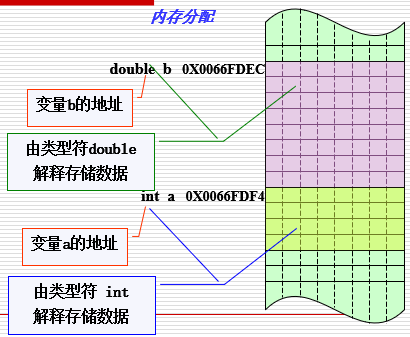
指针
指针是一种变量，具有变量的一切属性。
- 先定义后使用
- 能进行某些系统指定的运算
- 赋值的意义与其它变量一样
指针：即地址。
指针变量：用于存放地址的变量。在这种变量中存放的数值是**作为地址****使用**的，这个地址像是一个指针，指示存取数据的真正位置。即间接访问。
指针就是其值为内存单元地址的变量。变量名是直接引用一个值。指针是间接引用一个值。通过指针引用一个值，称为**间接寻址**。
指针的定义
数据类型 * 指针变量名;
| C |
|---|
| int *nPtr;
char *charPtr;
float * fPtr;
|
指针的初始化
①空指针
| C |
|---|
| int *nPtr; //定义一个指向int型数据的指针变量
nPtr = NULL; //nPtr = 0; 将这个指针变量初始化为空指针
|
②非空指针
| C |
|---|
| int *nPtr;//定义一个指向int型数据的指针变量
int x = 6;//定义并初始化变量x值为6
nPtr = &x; //将变量x的地址赋值给指针变量nPtr
|
取地址和解引用
取地址
1、取地址运算符：&
功能：返回变量的内存地址。
| C |
|---|
| int *p ,m ; //定义 p 为指向 int 类型变量m的指针
m=200 ;
p=&m ; //将整型变量 m 的地址值赋给指针变量 p
|
图示：
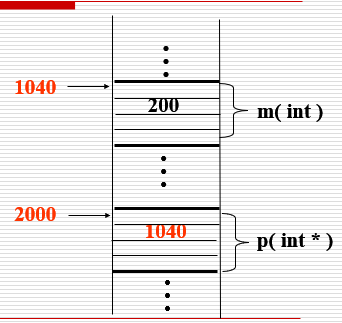
说明：
①一个指针变量只能指向同一数据类型的变量，该数据类型是在定义指针变量时明确给定的。
②C语言规定有效数据的指针不指向0单元(为非0值)，如果指针变量值为0，即NULL,表示空指针，即不指向任何变量。
③不要把地址值与整数类型值相混淆。例如：地址2000与整型量2000是两个不同的概念。
解引用
2、间接存取运算符（解引用运算符）：*****
功能：访问指针指向的变量。
| C |
|---|
| int *p , m=200 , n ;
p=&m ; // p 指向整型变量 m
n=*p ; 将p指向的值(即m的值)赋给 n
*p=100 ; 将 100 赋给指针变量 p 所指向的变量 m
|
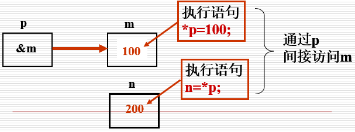
辨析：
| C |
|---|
1
2
3
4
5
6
7
8
9
10
11
12
13
14 | int main()
{
int age=25;
int *pointer=&age;
//问题：age，&age，pointer，&pointer，*pointer，*&age，&*pointer都是什么？
printf("\nthe value of age is %d .",age);
printf("\nthe value of &age is %#X .",&age);
printf("\nthe value of pointer is %#X .",pointer);
printf("\nthe value of &pointer is %#X .",&pointer);
printf("\nthe value of *pointer is %d .",*pointer);
printf("\nthe value of *&age is %d .",*&age);
printf("\nthe value of &*pointer is %#X .\n",&*pointer);
return 0;
}
|
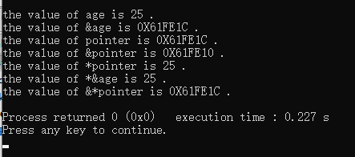
结论：
age，变量
&age，变量地址
pointer，变量地址
&pointer，指针变量地址
*pointer，变量
*&age，变量
&*pointer，变量地址
定义指针变量注意事项：
1、指针变量前面的“”，表示该变量的类型为**指针型变量*
| C |
|---|
| float * pointer_1；
指针变量名是pointer_1 ，而不是 *pointer_1
|
2、在定义指针变量时**必须指定基类型。**需要特别注意的是，只有整型变量的地址才能放到指向整型变量的指针变量中。下面的赋值是错误的∶
| C |
|---|
| float a;
int * pointer_1;
pointer_1=&a;
|
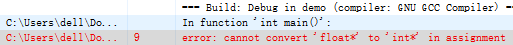
例：输入ａ和ｂ两个整数，按先大后小的顺序输出ａ和ｂ。
| C |
|---|
1
2
3
4
5
6
7
8
9
10
11
12
13
14
15
16
17
18 | #include <iostream>
using namespace std;
int main()
{
int *p1,*p2,*p,a,b;
scanf("%d %d",&a,&b);
p1=&a;
p2=&b;
if(a<b)
{
p=p1;
p1=p2;
p2=p;
}
printf("a=%d,b=%d\n\n",a,b);
printf("max=%d,min=%d\n",*p1,*p2);
return 0;
}
|
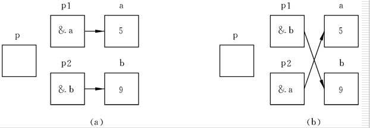
引用传参
按引用向函数传递实参
引用：变量或实参的别名。一块内存两个名字。
- 按引用向被调函数传递的实参，在被调函数中可以改变实参的值。（C++功能）
-
C语言提供模拟按引用调用的功能。
-
使用指针和间接寻址运算符(*)实现
- 实际传递实参的地址。
| C |
|---|
1
2
3
4
5
6
7
8
9
10
11
12
13
14
15
16
17
18
19
20
21
22
23
24
25
26 | #include <iostream>
using namespace std;
void swap(int *,int*);
int main()
{
int *pointer_1,*pointer_2,a,b;
scanf("%d %d",&a,&b);
pointer_1=&a;
pointer_2=&b;
printf("a=%d,b=%d\n\n",a,b);
if(a<b)
{
swap(pointer_1,pointer_2);
}
printf("max=%d,min=%d\n",*pointer_1,*pointer_2);
return 0;
}
void swap(int *p1,int*p2)
{
int temp;
temp=*p1;
*p1=*p2;
*p2=temp;
}
|
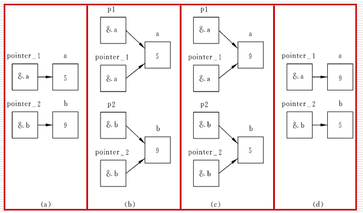
实质：指针的指向并没有改变，只是改变了指向的变量的值。
思考：怎样改变指针的指向？而不是改变指针指向变量的值
指针和const
1、const的作用
告诉编译器这个被const修饰的（指针）变量的值是不可改变的。向函数传递**指针型实参**时，若不允许改变实参的值(即指针的值、指针的指向)，应使用const限定符。
2、分类
-
非常量指针：**其值(地址)是可变化的，例 **int ***** p
-
指向非常量数据
-
int * nPtr;
- int x= 5, y = 8;
- nPtr = &x; *nPtr = 2;
-
nPtr = &y; *nPtr = 10;
-
指向常量数据
-
const int * nPtr;
- int x= 5, y = 8;
- nPtr = &x; 错误： *nPtr = 2;
-
nPtr = &y; 错误： *nPtr = 10;
-
常量指针：**其值(地址)是不可变化的，例 **int ***** const cp
-
指向非常量数据
-
int * const nPtr=&x;
- int x= 5, y = 8;
- *nPtr = 2;
-
错误：nPtr = &y;
-
指向常量数据
-
const int * const nPtr;
- int x= 5;
- nPtr = &x; 错误： *nPtr = 2;
指针和++、--、*
++、--、*优先级相同
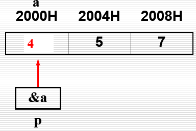
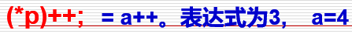
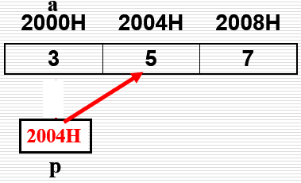
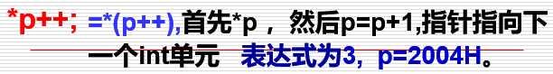
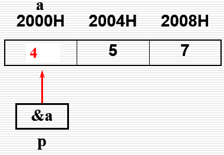
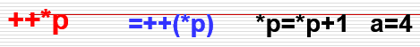
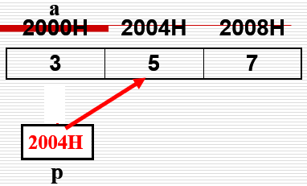
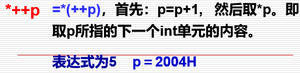
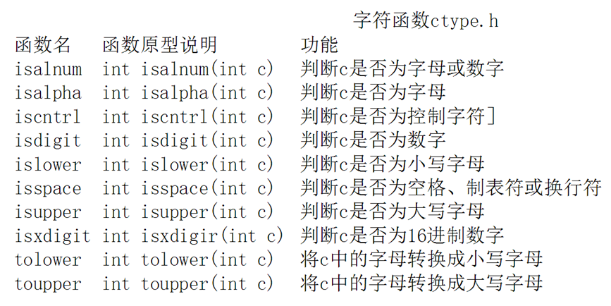
| C |
|---|
1
2
3
4
5
6
7
8
9
10
11
12
13
14
15
16
17
18
19
20
21 | #include <stdio.h>
#include <ctype.h> /*字符处理
函数库头文件*/
void convertToUppercase (char *sPtr );
int main( void ){
char string[ ] = "characters and $32.98";
printf( "The string before conversion is : %s\n", string );
convertToUppercase( string );
printf( "The string after conversion is : %s\n", string );
return 0;
} /* end main */
/* convert string to uppercase
letters */
void convertToUppercase(char *sPtr ){
while( *sPtr != '\0' ){
if( islower( *sPtr )){
*sPtr = toupper( *sPtr );
} /* end if */
++sPtr;
} /* end while */
} /* end converToUppercase */
|
数组和指针
指向数组元素的指针
- 数组与变量一样，在内存中占据单元，有地址，一样可以用指针来表示。
-
C语言规定：
-
数组名就是数组的起始地址；
- 数组的指针就是数组的起始地址。（==>数组指针就是数组名）
- 数组元素的指针就是数组元素的地址
| C |
|---|
| int main( void ){
int arrayy[8];
printf("数组名的地址：%#X \n",&arrayy);
printf("数组名的地址：%#X \n",arrayy);
printf("数组元素array[0]的地址：%#X \n\n",&arrayy[0]);
for (int i=0;i<8;i++){
printf("数组元素array[%d]的地址：%#X \n",i,&arrayy[i]);
}
return 0;
}
|
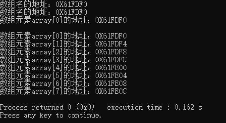
指向数组元素的指针变量的定义和赋值
| C |
|---|
| int a[10], *p;
p=&a[0]; //数组第一个元素的地址
p=a; //直接用数组名赋值
//p是变量，a为常量
若数组元素为int型，则指向其的指针变量也应定义为int型
int a[10];
int *p=a; //等价
int *p=&a[0]; //等价
|
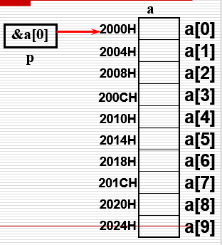
怎样表示数组中的第i个元素？
指针p，数组a，p的初值为a
***(a+i)** 数组名法
***(p+i)** 指针法
a[i] 下标法
p[i] 下标法
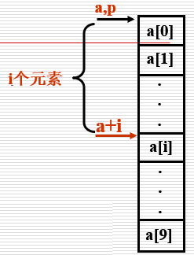
怎样表示数组中的第i个元素的地址？
指针p，数组a，p的初值为a
a+i 数组名法
p+i 指针法
&a[i] 下标法
&p[i] 下标法
通过数组名和指针变量访问数组元素的区别：
1.指针变量是地址变量，其指向由所赋值确定。
2.数组名是地址常量（指针常量），恒定指向
数组的第1个元素。
指针相减运算的意义？
**指向相同数据类型**的指针变量可以相减，其结果为两指针所指向地址之间数据元素的个数。
| C |
|---|
| int *px;
int *py;
int n;
int a[5];
px=&a[1];
py=&a[4];
n=py-px ; //结果：n 值为3
|
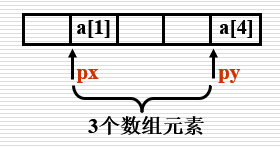
指针比较运算的意义？
==、!=、<、<=、>、>=
指针的关系运算是两个指针（指向相同数据类型）所指向的地址之间的比较运算，产生的结果为 0（假）和 1（真）。
示例：
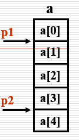
| C |
|---|
| 有定义：double a[5],*p1,*p2 ; p1,p2 的指向如图所示
计算：
p1==p2 判断p1,p2是否指向同一变量？ 结果：0
p1<p2 判断p1的地址是否比p2的地址小？ 结果：1
p1==NULL 判断p1是否为空指针？(NULL是系统定义的) 结果：0
p1!=0 判断 p1 是否不为空指针？ 结果：1
|
冒泡排序：
| C |
|---|
1
2
3
4
5
6
7
8
9
10
11
12
13
14
15
16
17
18
19
20
21
22
23
24
25
26
27
28
29
30
31
32
33
34
35
36
37
38
39
40
41
42
43
44
45
46
47
48
49
50
51
52
53
54
55 | #include <stdio.h>
#define LEN 8
//冒泡排序——1
int main( void ){
int arrayy[LEN]={38,49,65,97,76,13,27,52};
for(int i=0;i<LEN-1;i++){ //总共比较LEN-1轮
for(int j=0;j<LEN-1-i;j++){//每一轮需要比较LEN-1-i次
if(arrayy[j]>=arrayy[j+1]){
int temp=arrayy[j+1];
arrayy[j+1]=arrayy[j];
arrayy[j]=temp;
}
printf("第%d轮第%d次比较 ",i+1,j+1);
}
printf("\n");
}
for(int i=0;i<LEN;i++){
printf("%d ",arrayy[i]);
}
return 0;
}
==============================================
#include <stdio.h>
#define LEN 8
void swapp(int *,int* );
//冒泡排序
int main( void ){
int arrayy[LEN]={38,49,65,97,76,13,27,52};
for(int i=0;i<LEN-1;i++){ //总共比较LEN-1轮
for(int j=0;j<LEN-1-i;j++){//每一轮需要比较LEN-1-i次
if(arrayy[j]>=arrayy[j+1]){
swapp(&arrayy[j],&arrayy[j+1]);
}
printf("第%d轮第%d次比较 ",i+1,j+1);
}
printf("\n");
}
for(int i=0;i<LEN;i++){
printf("%d ",arrayy[i]);
}
return 0;
}
void swapp(int *a,int *b){//传递数组元素的地址
if(*a>=*b){
int temp=*b;
*b=*a;
*a=temp;
}
}
|
sizeof运算符
在编译程序期间计算出数据类型（包括数组）的字节长度。注意字符数组末尾是一个'\0'字符
| C |
|---|
| int main( void ){
char name[]="abcdefg";
for(int i=0;i<sizeof(name);i++){
printf("%d ",name[i]);
}
printf("\n字符数组name的长度是：%d \n",sizeof(name));
return 0;
}
函数getSize : 也是返回类型的字节数.该函数在程序运行时才执行.返回值类型 ：size_t (相当于unsigned int
或者 unsigned long int)
|
字符指针变量VS字符数组
1、存储形式不同
字符数组由若干个元素组成，每个元素中放一个字符。而字符指针变量中存放的是地址（字符串第1个字符的地址），决不是将字符串放到字符指针变量中。
2、赋值方式
对字符数组只能对各个元素赋值，不能用以下办法对字符数组赋值。
| C |
|---|
| char str［14］;
str＝″I love China！″;
|
而对字符指针变量，可以采用下面方法赋值：
| C |
|---|
| char *ａ；
ａ＝″I love China！″；
//以上两行等价于
char * ａ＝″I love Chian！″；
|
3、初始化方式
对字符指针变量赋初值：
| C |
|---|
| char *ａ＝″Ｉ love China！″；等价于
char *ａ；
ａ＝″I love Chian！″；
|
对数组的初始化：
| C |
|---|
| char str［１４］＝｛″Ｉ love China！″｝;
不能等价于
char str［１４］；
str［ ］＝″I love China！″；
|
**4、**定义了一个字符数组，在编译时为它分配内存单元，它有确定的地址。
而定义一个字符指针变量时，给指针变量分配内存单元，在其中可以放一个字符变量的地址。
| C |
|---|
| 例如: char str［１０］；
scanf（″％ｓ″，str）；
|
5、指针变量的值是可以改变的，例如：
| C |
|---|
| int main( void )
char *a="I love China!";
a=a+7;
printf("%s",a);
return 0;
}
|
若定义了一个指针变量，并使它指向一个字符串，就可以用下标形式引用指针变量所指的字符串中的字符。例如:
| C |
|---|
| int main( void ){
char *a="I love China!";
int i;
printf("the sixth character is %c\n",a[5]);
for(i=0;a[i]!='\0';i++){
printf("%c",a[i]);
}
return 0;
}
|
多维数组和指针
用指针变量可以指向一维数组中的元素，也可以指向多维数组中的元素。
多维数组元素的地址：****二维数组是“数组的数组”
| C |
|---|
| int a[3][4]={
{1, 3, 5, 7},
{9, 11, 13, 15 },
{17,19, 21, 23 }
};
|
二维数组a是由3个一维数组所组成的。设二维数组的首行的首地址为0X2000 ，则
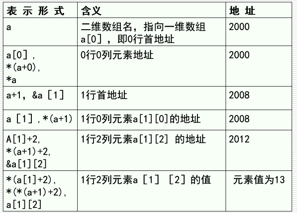
| C |
|---|
1
2
3
4
5
6
7
8
9
10
11
12
13
14
15
16
17
18
19 | * #define FROMAT "%d,%d\n"
int main( void )
{
int a[3][4]=
{
{1, 3, 5, 7},
{9, 11, 13, 15 },
{17,19, 21, 23 }
};
printf(FORMAT,a,*a);
printf(FORMAT,a[0], *(a+0));
printf(FORMAT,&a[0],&a[0][0]);
printf(FORMAT,a[1],a+1);
printf(FORMAT,&a[1][0],*(a+1)+0);
printf(FORMAT,a[2],*(a+2));
printf(FORMAT,&a[2],a+2);
printf(FORMAT,a[1][0],*(*(a+1)+0));
return 0;
}
|
指针数组
数组元素全部是指针
- 通常用来构造字符串数组，故指针数组又称为字符串数组。
- 字符串数组的每一个元素都是一个字符串（实质上是指向字符串的指针）。
| C |
|---|
| const char *suits[ 4 ] = { “Hearts”, “Diamonds”, “Clubs”, “Spades” }
|
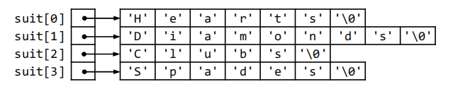
洗牌发牌模拟
| C |
|---|
1
2
3
4
5
6
7
8
9
10
11
12
13
14
15
16
17
18
19
20
21
22
23
24
25
26
27
28
29
30
31
32
33
34
35
36
37
38
39
40
41
42
43
44
45
46
47
48
49
50
51
52
53
54
55
56
57
58
59
60
61
62
63
64
65
66
67
68
69
70 | #include <stdio.h>
#include <stdlib.h>
#include <time.h>
void shuffle( int wDeck[ ][ 13 ] );
void deal( const int wDeck[][ 13 ],
const char *wFace[ ],
const char *wSuit[] );
int main( void )
{
const char *suit[ 4 ] = { "Hearts","Diamonds", "Clubs", "Spades"};
const char *face[ 13 ] =
{
"Ace", "Deuce", "Three", "Four",
"Five","Six", "Seven", "Eight",
"Nine", "Ten", "Jack", "Queen",
"King"
};
int deck[ 4 ][ 13 ] = { 0 };
srand( time( NULL ) );
shuffle( deck );
deal( deck, face, suit );
return 0;
}
void shuffle( int wDeck[][ 13 ] )
{
int row;
int column;
int card;
/* for each the 52 cards, choose slot of deck randomly */
for( card = 1; card <= 52;card++ ){
/* choose new random location until unoccupied slot found */
do{
row = rand() % 4;
column = rand() % 13;
}
while( wDeck[ row ][ column ] != 0 );
/* place card number in chosen slot of deck */
wDeck[ row ][ column ] = card;
} /* end for */
} /* end function shuffle */
/* deal cards in deck */
void deal( const int wDeck[][ 13 ],
const char * wFace[],
const char *wSuit[] )
{
int card;
int row;
int column;
/* deal each of the 52 card */
for( card = 1; card <= 52; card++ ){
/* loop through rows of wDeck */
for( row = 0; row <= 3;row++ ){
/* loop through column of wDeck for current row */
for( column = 0; column <= 12;column++ ){
/* if slot contains current card,display card */
if( wDeck[ row ][ column ] == card ) {
printf("%5s of %-8s%c", wFace[ column ],wSuit[ row ],card % 2 == 0 ? '\n' : '\t' );
} /* end if */
} /* end inner for */
} /* end middle for */
} /* end outer for */
} /* end function deal */
|
函数指针
一个指向函数的指针包含的是一个函数在内存中的地址。函数名就是执行该函数功能的程序代码在内存中的起始地址
定义
| C |
|---|
| 返回类型 ( *函数名 )( 形参列表)；
int (*f)( int a, int b );
double (*function)( double d );
|
调用
| C |
|---|
| (*函数名）（实参列表）；
int x = 4, y = 6;
( *f )( x, y );
( *function)( 4.0 );
|
用函数指针实现冒泡法排序:
| C |
|---|
1
2
3
4
5
6
7
8
9
10
11
12
13
14
15
16
17
18
19
20
21
22
23
24
25
26
27
28
29
30
31
32
33
34
35
36
37
38
39
40
41
42
43
44
45
46
47
48
49
50
51
52
53
54
55
56
57
58
59
60
61
62
63
64
65
66
67
68
69
70
71
72
73
74
75 | /* Fig. 7.26 : fing07_26.c Multipurpose sorting program using function pointer
*/
#include <stdio.h>
#define SIZE 10
/* prototypes */
void bubble(int work[], const int size, int (*compare)(int a, int b));
int ascending(int a, int b);
int descending(int a, int b);
int main(void) {
int order;
int counter;
/* initialize array a */
int a[SIZE] = {2, 6, 4, 8, 10, 12, 89, 68, 45, 37};
printf(
"Enter 1 to sort in ascending order,\n"
"Enter 2 to sort in descending order,\n");
scanf("%d", &order);
printf("\nData items in original order\n");
/* output original array */
for (counter = 0; counter < SIZE; counter++) {
printf("%5d", a[counter]);
} /* end for */
/* sort array in ascending order;pass function ascending as an argument to
* specify ascenting sorting order */
if (order == 1) {
bubble(a, SIZE, ascending);
printf("\nData items in ascending order\n");
} /* end if */
else { /* pass function descending */
bubble(a, SIZE, descending);
printf("\nData items in descending order\n");
} /* end else */
/* output sorted array */
for (counter = 0; counter < SIZE; counter++) {
printf("%5d", a[counter]);
} /* end for */
printf("\n");
return 0;
} /* end main */
/* multipurpose bubble sort;parameter compapare is a pinter to the comparison
* function function that determines sorting order */
void bubble(int work[], const int size, int (*compare)(int a, int b))
{
int pass;
int count;
void swap(int *element1Ptr, int *element2Ptr);
/* loop to control passes */
for (pass = 1; pass < size; pass++) {
/* loop to control number of comparisons per pass */
for (int counter = 0; counter < size - 1; counter++) {
/* if adjacent elements iare out of order, swap them */
if ((*compare)(work[count], work[count + 1])) {
swap(&work[count], &work[count + 1]);
} /* end if */
} /* end inner for */
} /* end outer for */
} /* end bubble */
/* swap values at memory locations to which element1Ptr and element2Ptr point
*/
void swap(int *element1Ptr, int *element2Ptr) {
int hold;
hold = *element1Ptr;
*element1Ptr = *element2Ptr;
*element2Ptr = hold;
} /* end swap */
/* determine whether elements are out of order for an ascending order sort */
int ascending(int a, int b) { return b < a; } /* end ascending */
/* determine whether elements are out of order for an descending order sort */
int descending(int a, int b) { return b > a; } /* end desending */
|
练习：写出定义语句：int n=20;
p为指向整型数据的指针变量 int *p
定义整型数组a，它有n个元素 int a[n]
定义指针数组p，它由n个指向整型数据的指针元素组成 int *p[n]
p为指向含n个元素的一维数组的指针变量 int (*p)[n]
f为返回整型函数值的函数 int f();
p为指向函数的指针，该函数返回一个整型值 int (*p)()
P为一个数组，创建了n个指向函数的指针 int (*p[n]) ();
p是一个指向指针的指针变量，它指向一个指向整型数据的指针变量 int **p
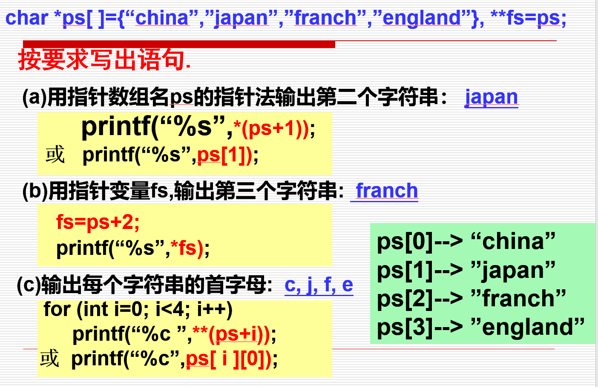
本章小结
- 一个指针包含的是一个存放数值的变量的地址
- 使用指针可以模拟按引用向函数传递实参
- 同类指针可以进行某些算术运算
- 指针和数组可以互换使用
- 指针数组常用来表示字符串数组
- 函数指针包含的是一个函数在内存中的起始地址，常用于基于文本的菜单驱动系统
函数指针
- 数组名 != &数组名：
arr!=&arr;
- 函数名 = &函数名：
func=&func;
声明
| C++ |
|---|
| 返回值类型 ( * 指针变量名) ( 形参列表 );
int func(int a,double b);//声明函数
int (*ptr) (int a,double b);//声明函数指针
|
声明简化
| C++ |
|---|
| typedef int (*type_ptr) (int a,double b);
//声明函数指针数据类型，类型名为type_ptr
type_ptr ptr1,ptr2,ptrn;
ptr1=func;
ptr2=func
|
赋值
| C++ |
|---|
| ptr=func;//函数指针赋值方式1
ptr=&func;//函数指针赋值方式2
|
调用
| C++ |
|---|
| ptr(10,10.5);//函数指针调用
(*ptr)(10,10.5);//函数指针调用
|
应用场景
- 回调函数
- 线程
本章小结